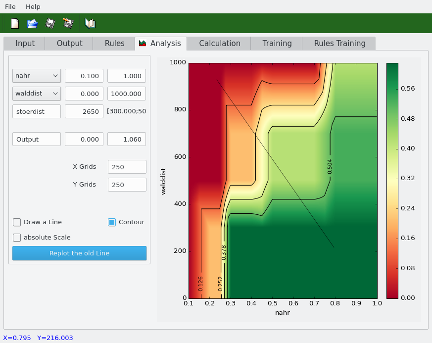
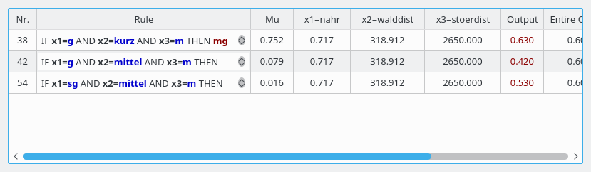

SAMT2 - Fuzzy has been designed as a simple and fast tool for editing fuzzy models.
To get information about the restrictions in this tool please read the introduction.
In order to make the editing of a fuzzy models very simple and fast, SAMT2 - Fuzzy has been devided in six parts.
- Input page
- Output page
- Rules page
- Analysis page
- Calculation page
- Training page
- Rules Training page
You can switch between these pages if you click at the corresponding tab in the mainwidget. In the following chapter there is a short
introduction of the most important functions. At first we will start with the input page.
At this page you can edit the membership functions of each input. By increasing the number in the spinbox the number of
inputs can be changed. For navigating among different inputs use the combobox in the left area.
Input names can be edited directly in the combobox. To type a new, to edit or to delete an existing membership function
use the buttons next to the table. By editing a function a dialog window will pop up in which you can edit name,
type and range of the membership function (see below). Every edited membership function is shown in
the table and plotted in the graph below. To make small corrective actions you can change the graph by hitting a vertex and dragging the mouse.
| Change the number of inputs |
|
| Navigation between different inputs |
|
| Editing the membership functions |
|
| Dialogue of membership functions |
|
|
| Input page:
values left and right are members of the classes sk and sg |
At this page the output will be edited. The name can be changed in the line edit. Editing a "output - membership function"
is similar to the input membership functions. You can type a new, edit or delete an existing membership function by clicking
on the buttons next to the table or by double clicking on a row in the table. Every function is shown in the table and plotted on the graph below.
To make small corrective actions you can change a singleton by hitting a vertex and dragging
the mouse. You can edit a function in the Edit output - dialogue that will appear by pressing the buttons New or Edit.
In that dialogue you only have to specify the name of the membership function and the singleton value.
|
| Output page |
|
|
| Edit Output - Dialog |
There are two ways to create rules.
- First, you can press the button Generate new rules (recommended possibility) so all rules are generated.
The inference method (PROD or MIN)can be chosen in the right hand combobox.
The rules are a total combination of all membership functions of the inputs. You only need to choose the correct
output from the Combobox in the table and declare the cf-value. The cf-value must be in the range of 0 and 1.
The cf value defines the influence of this rules to the calculation of the whole output.
- Second, you can righ-click on the table so a a context menu popups with the two items New Rule or Delete Rule.
If you press New Rule there will be appended a new row at the end of the table. If you choose Delete Row
the current row in the table will deleted. But this way to create new rules you should only use for implementing an OR
concatenation of some rules. The other way of generating rules would be better because you will not forget creating a rule.
The second button is "Set all cf to 1.0": use it carefully, there is no way back to the
originally cf values.
In this part of SAMT2 - Fuzzy you have the possibility to analyse your edited fuzzy model.
On the left hand side there is shown the analyse plot of the fuzzy model. If you click into this plot there popups a
window that includes a table. In this table you can see the values of the inputs, the active rules with the appropriate
output and the coefficient mu of the rules that shows, how much does this rule affect the entire output.
This table will help you to detect errors in your base of rules.
On the right hand side you can see the
range of the input and output according to the model you have edited. To change the order of the displayed inputs
you can choose other inputs bye using the Comboboxes. You can change the grid to reach a higher perfomance of the plot.
If the grid is greater than 49 it will disappear. At a three-dimensional fuzzy model you can change the value of the third
variable that can not be shown because of the two-dimensional representation.
|  |
Analysis page
|
|  |
Analysis table
|
|
| Analysis page with line |
At this page you can apply your fuzzy model to data series. You have to specify the path where the data file is stored.
The specified data file is shown in the text edit in the right part of the calculation page.
In this text edit no changes in your data file can be made. The layout of the data file you like to include must
follow some directives (examples). At the head of the file, there can be some header lines,
that will be skipped when reading the datas. The number of header lines must be set in the destinated spinbox.
At next there must follow the data, which are expected in a tabular form. The number of columns are dependent to the number of inputs in the model.
If there is only one input in the model, one data column is expected. If there are two inputs, two data columns were expected, etc.
The columns can be parted by different separators, that has to be specify in the special separator groupbox.
There, you can choose some default separators or define a special one.
There are two possibilities to save the calculated results.
First, you can save the results in the same data file, that means there will be added a column which includes the calculated values for the
special input datas. Second, you can specify a separat file, where the results will be saved. If you chosse that way, you have to
specify the path of that file. The button Start Fuzzy Calculation will start the whole calculation.
| 1. Example |
2. Example |
3. Example |
number of inputs: 1
separator=none
header lines: 4
|
number of inputs: 2
separator="; "
header lines: 0
|
number of inputs: 3
separator="xx"
header lines: 2
|
**************
**************
**************
**************
0
2
4
6
8
10
12
14
16
18
|
0; 20
2; 18
4; 17
46; 2
14; 55
2; 5
116; 70
10; 27
49; 10
44; 20
44; 20
17; 89
34; 23
24; 3 |
**************
**************
12xx16xx57
17xx46xx17
3xx75xx31
12xx36xx86
23xx65xx51
62xx11xx24
72xx36xx67
76xx35xx25
0xx5xx9
1xx16xx4
12xx0xx36
12xx97xx0
|
At this page you can train the output of your fuzzy model in dependency to
a specific data file.
The fuzzy training uses now a different training procedure based on
NLOPT.
Additionally a regularization was introduced to avoid over training.
This makes the training much easier for the modeler. For example the
choose of a increment values is not necessary any more. The modeler has
to load the training data and to start the training itself. After finishing
the training (it takes a bit, please be patient) the changed outputs are
used as new valid outputs.
To use the training please follow the step below:
You have to specify the path where the data file is stored. The layout of the data file
you like to include must follow some directives.
At the head of the file, there can be some header lines, that will be skipped when reading the data.
The number of header lines must be set in the spin box.
At next the data columns must follow, which are expected in a tabular form.
The data columns consist of one to three input columns and one output column.
The output column includes the expected output value according to the input values.
The training results are shown in the lower part of the training page.
First the mean square error of the model before it has been trained is shown
in the "RMS before Training" control element.
The value "RMS after Training" indicates the mean square error after training the model.
The output values both before training and after training are shown in the table
and in the right graphic. The trained output values are plotted with a red pen.
If you want to remove the trained outputs and restore the old one, please use the button
"Restore Last Output" before you go back to any other "rider" other wise the trained output is used.
At this page you can train the rules of your fuzzy model in dependency to
a specific data file.
|
Rules Page after Rules Training
|
| With the button set all cf values to 1.0. Use it carefully, there is no way back to the
originally cf values. |
Back to Manual